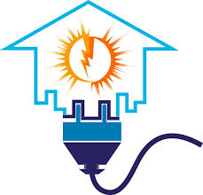
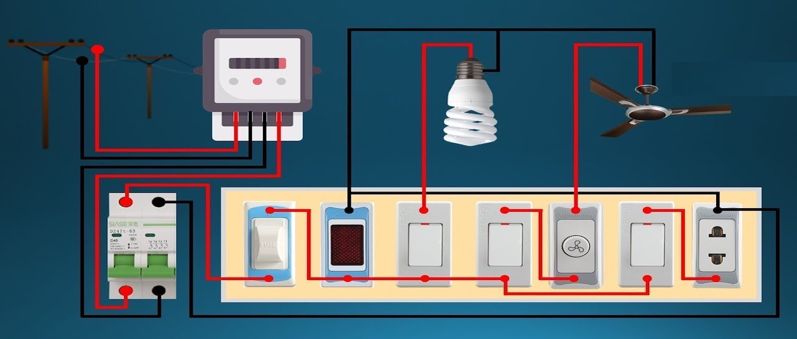

E SOLUTIONS
E SOLUTIONS
ALL ELECTTRICAL AND ELECTRONIS APPLINCES SERVICE PROVIDERS

An electrical contractor is different from an electrician; an electrician is an individual tradesman and an electrical contractor is a business person or company that employs electricians. Both usually hold licenses and insurances to properly and safely operate a business, protecting the employees and home owners/business owners from insurance liabilities. These requirements vary from state to state. Electricians may work for an electrical contractor, or directly for individuals or companies."Inside" electrical contractors provide electricity to any structure within a property's boundary lines, including outdoor lighting or substations. Under current construction specification guidelines, "inside" electrical contractors can serve as prime contractors for all electrical and cabling design, installation, and maintenance for commercial, institutional, and residential buildings. Projects also include Database Centers/Infrastructure and Pharmaceutical Work.
"Integrated building systems" (IBS) or "Voice/Data/Video" (VDV) electrical contractors work primarily with low-voltage installations such as back-up power, climate controls, wireless networks, energy-efficient lighting, telecommunications, fiber optics, and security systems. IBS contractors are particularly skilled at integrating these system controls to work together for maximum energy efficiency and building performance.
TYPES OF SERVICES
HOUSE WIRING

PER SQUAREFEET RS: 25 ONLY
AS PER THE CUSTOMER REQUIREMENT QUALITY OF THE MATERIAL ARE CHOOSEN
TILES FITTING
PER SQUAREFEET RS: 24 ONLY
ROOF PAINTING
.jfif)
SOLAR installation
.jfif)
Review electricity bills to determine annual electricity needs. Your usage will be shown in kilowatt-hours (kWh). Review each month of the year; you may use more electricity in some months than others (e.g., if you run the air conditioner in the summer). Some utilities offer tools that can help with this review.
Consider any planned changes. If you will be purchasing an electric vehicle or are planning a home addition, your electricity.
needs may increase. If you are continuing to make significant changes to improve your home's energy efficiency, you may need less electricity than you used in the past.
The site's solar resource or available sunlight
The system's orientation and tilt
The system's efficiency at converting sunlight to electricity
AS PER SELECTION OF THE MATTERIAL THE COST IS VARIED
CONSTRUCTION 2D AND 3D DESIGN
.jfif)
FREE CONSULTING, FOR EXECUTION PER PLAN RS: 3000 ONLY
FURTHER ENQUIRY CONTUCT US
+919944344949
 uvaraja2005m@gmail.com
uvaraja2005m@gmail.com